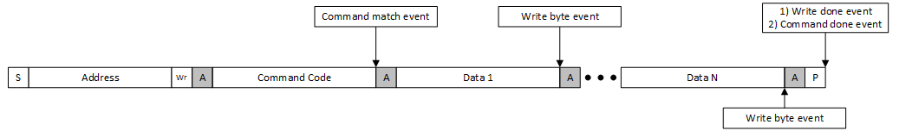
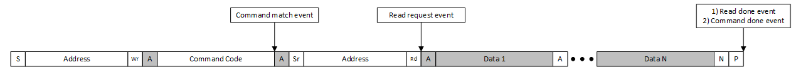
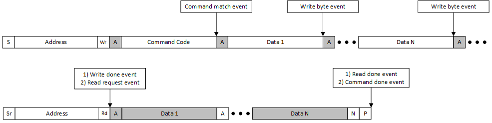
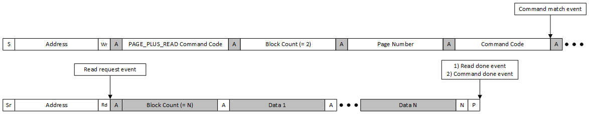
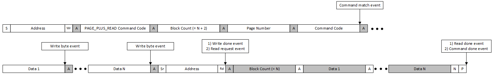
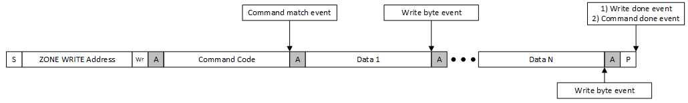
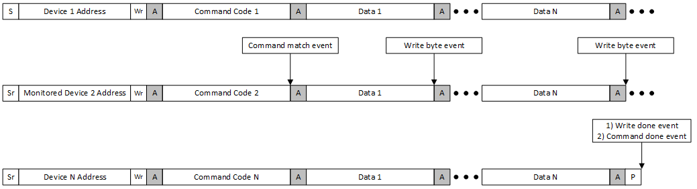

|
mtb-pmbus 1.3.0.1943
|

|
|
mtb-pmbus 1.3.0.1943
|
|
The PMBus middleware supports multiple protocols defined in the SMBus and PMBus specifications. This section provides the specifics of the implementation for both Target and Controller modes.
Quick Command vs Received Byte Protocols:
The Quick Command with the Read direction bit and the Received Byte protocol are identical during the Address stage of the transfer. As a result, the target device cannot distinguish between them in time, which may lead to an error condition on the bus.
Note: After the last SCL clock for the ACK/NACK bit of the address part, the target starts to set the first bit of the Received Byte protocol. At the same time, if a Quick Command is initiated, the controller sets the SDA line to a low level to generate the STOP condition. Then, after setting the SCL line to a high level, the following cases can occur on the bus:
- If the first bit of the Received Byte is 1, the controller wins arbitration and completes the transfer with a STOP condition. From the target's point of view, such a sequence of events on the bus is considered as arbitration lost.
- If the first bit of the Received Byte is 0, the target continues holding the SDA line, which prevents the STOP event generation, and most likely a timeout error will be generated after 25 ms.
As a result, you can use Quick Command and Received Byte as follows:
Note: If the Quick Command is initiated by the controller and the Received Byte is disabled in the middleware, the middleware sends the 0xFF byte after the address part of the transfer and ignores the arbitration lost event. Sending 0xFF allows the controller to win arbitration.
Note: For this case, the arbitration lost event is also ignored and the middleware does not report it to the application level.
Zone Read and Write Protocols:
The Middleware handles the Zone Read and Zone Write protocols, assigning new zones to the pages and tracking the new active zones on the bus automatically. Also, the Middleware cares about Command Control code and determines the type of actions (Status or Command), the byte ordering, bit swapping and respond mode. So, the commands handling is very similar to standard protocols. Also, to read/write command data, the Zone Read protocol can be used to request the status. The Middleware reports the requested status bits through in callback to application, see mtb_pmbus_zone_events_t.
To enable Zone protocols execute the next steps:
MTB_PMBUS_SUPPORT_ZONE to 1Umtb_pmbus_stc_config_t::enable_zone to trueMTB_PMBUS_IMPL_CMD_ZONE_CONFIG and MTB_PMBUS_IMPL_CMD_ZONE_ACTIVEMTB_PMBUS_IMPL_CMD_ZONE_CONFIG_EN and MTB_PMBUS_IMPL_CMD_ZONE_ACTIVE_EN masks in mtb_pmbus_stc_config_t::impl_cmd_mask fieldmtb_pmbus_stc_config_t::zone_callback in case if status should be handledZone Write and Zone Read command handling:
From User point of view, the commands handling during the Zone protocols is almost the same as for standard protocols. The only difference is that during Zone Read protocol, the lost arbitration event may occur when the Middleware loses arbitration to another target. To ensure that Controller completes the read of the command, always check if MTB_PMBUS_CMD_DONE event has occurred.
By default, after initialization of PMBus instance, the 0xFE zone is assigned for all pages. It is expected that the proper zone values are assigned by Controller or manually use the mtb_pmbus_set_default_zones function.
Zone protocols rely on the pages, but if pages are disabled for PMBus instance, the Zone Write and Zone Read are assigned globally for the whole instance.
The Controller mode provides dedicated API functions to execute standard SMBus protocols. The middleware handles protocol-specific details such as command code, byte counts, payload formatting, PEC calculation, and proper bus sequencing.
Supported SMBus/PMBus Protocols:
| Protocol Name | API Function |
|---|---|
| Quick Command (Write direction) | mtb_pmbus_ctrl_ex_quick_cmd |
| Send Byte | mtb_pmbus_ctrl_ex_send_byte |
| Write Byte | mtb_pmbus_ctrl_ex_write_byte |
| Write Word | mtb_pmbus_ctrl_ex_write_word |
| Write 32 | mtb_pmbus_ctrl_ex_write_32 |
| Write 64 | mtb_pmbus_ctrl_ex_write_64 |
| Receive Byte | mtb_pmbus_ctrl_ex_received_byte |
| Read Byte | mtb_pmbus_ctrl_ex_read_byte |
| Read Word | mtb_pmbus_ctrl_ex_read_word |
| Read 32 | mtb_pmbus_ctrl_ex_read_32 |
| Read 64 | mtb_pmbus_ctrl_ex_read_64 |
| Process Call | mtb_pmbus_ctrl_ex_process_call |
| Block Write | mtb_pmbus_ctrl_ex_block_write |
| Block Read | mtb_pmbus_ctrl_ex_block_read |
| Block Write-Block Read Process Call | mtb_pmbus_ctrl_ex_block_process_call |
Note: Quick Command with Read direction is not supported due to hardware limitations. See Quick Command with Read Direction Limitation section for details.
Generic Transfer Execution API:
For advanced use cases or custom protocols not covered by the standard API functions, the middleware provides a generic transfer execution API.
mtb_pmbus_ctrl_execute_transfer - Generic transfer function, which accepts a transfer configuration structure (mtb_pmbus_ctrl_stc_transfer_cfg_t) containing all transfer parameters:Note: When using the generic transfer API, the application is responsible for the proper protocol sequencing and data formatting. The middleware still handles low-level I2C operations, and error detection.
Note: See Add SMBus/PMBus controller code to your project section of the Controller mode Quick Start Guide for examples of using the generic transfer API to implement the Write Byte, Write Word, and Read Word protocols.
The SMBus specification defines a few timeouts:
This middleware only detects the tTIMEOUT condition. The Timeout handling is a compile-time option.
Note: Under standard configuration, the middleware does not violate tLOW:TEXT. However, enabling logging can significantly impact the response time to received addresses and bytes, making it easy to exceed the cumulative clock low extend time.
The PMBus middleware provides multiple callbacks for both Target and Controller modes. Almost all callbacks are called inside the ISR handler, so these callback functions must be optimized for the usage in ISR.
Target mode provides several types of callbacks for handling commands and events: command callbacks, general event callbacks, zone callbacks, and error callbacks.
Each command may have its own callback. This callback is registered in the command config structure, see mtb_pmbus_stc_config_cmd_t::callback. The list of events is available in mtb_pmbus_cmd_events_t. The callback is called only with one event at a specific time moment.
Besides the event, the PMBus middleware also informs about the active page/phase and the received byte. The received byte is actual only for the MTB_PMBUS_CMD_WRITE_BYTE event. If the command is not paged and/or phased, the page/phase parameters must be ignored.
The callback can return the bool value, this value is ignored for all events except MTB_PMBUS_CMD_WRITE_BYTE and MTB_PMBUS_CMD_MATCH. For the MTB_PMBUS_CMD_WRITE_BYTE event, the return value will indicate which response (true - ACK, false - NACK) to send after receiving the data byte. The MTB_PMBUS_CMD_WRITE_BYTE event is triggered only for data bytes, for example, byte-count byte for Block Write/Read is completely handled inside the middleware. For MTB_PMBUS_CMD_MATCH, NACK command is possible if the command is not ready to be processed.
Events visualization for write transfer:

Events visualization for read transfer:

Events visualization for process call transfer:

Events visualization for PAGE_PLUS_WRITE transfer:

Events visualization for PAGE_PLUS_READ transfer:

Events visualization for PAGE_PLUS_READ process call transfer:

Events visualization for Zone Write transfer:

Events visualization for Zone Read transfer:

Note: During Zone Read transfer, the
MTB_PMBUS_CMD_ARB_LOSTevent might occur once per each read response. If theMTB_PMBUS_CMD_ARB_LOSTevent has been occurred during response - the followingMTB_PMBUS_CMD_READ_DONEwill be ignored.
Events visualization for Group Command transfer. Callback triggering is analyzed for Device 2:

The PMBus middleware provides two common callbacks: one for general events (see mtb_pmbus_handle_cmd_events_t) and one for Zone features (see mtb_pmbus_handle_zone_events_t). The general events callback is required only if any of these events is/are used by the application. The middleware always responds to Quick Command with both RD and WR directions as required by the SMBus/PMBus specification, always sending an ACK after receiving the target address. Additionally, the middleware sends a byte in the Received Byte callback with the default value is 0xFF.
Note: When PMBus mode is enabled, a target address with the RD direction is considered a data content fault. The middleware still sends an ACK after receiving the address but generates the corresponding error in the
mtb_pmbus_handle_error_events_tcallback.
The mtb_pmbus_handle_error_events_t callback is also used to report communication errors. This callback is typically invoked when a STOP condition occurs on the bus or when an extraordinary sequence of events happens, such as a bus error or timeout. It is important for the application to use this callback to provide the correct response to fault events. The application can ignore handling certain error events if they are not relevant to the features in use. For example, there is no need to handle PMBus-specific events when only SMBus mode is enabled.
Controller mode provides a simpler callback mechanism compared to Target mode. The callbacks are registered in the mtb_pmbus_ctrl_cfg_t configuration structure.
The mtb_pmbus_ctrl_cfg_t::callback_events callback is invoked to report the completion of transfer operations or communication errors. This callback is registered in the controller configuration structure and is called with events from mtb_pmbus_ctrl_events_t enumeration.
Note: Implementation of this callback is optional but recommended. It allows the application to handle successful transfer completion and error conditions appropriately. Without this callback, the application can still poll the transfer status, but it will not receive immediate notifications of events.
The callback is called inside the ISR handler, so it must be optimized for ISR usage.
List of events reported through this callback:
| Event | Value from enumeration | Description |
|---|---|---|
| Transfer Done | MTB_PMBUS_CTRL_TRANSFER_DONE | Transfer completed successfully. The controller has successfully completed the requested transfer operation (write, read, or process call). All data bytes were transmitted or received, and all acknowledgments were received as expected. If PEC is enabled, the PEC byte was successfully validated. |
| Corrupted Data | MTB_PMBUS_CTRL_CORRUPTED_DATA | Data corruption detected. This event indicates that PEC validation failed - the calculated PEC does not match the received PEC byte. |
| Target NACK Address | MTB_PMBUS_CTRL_TARGET_NACK_ADDR | Target device NACKed the address. The target device did not acknowledge its address during the address phase of the transfer. |
| Target NACK Command | MTB_PMBUS_CTRL_TARGET_NACK_CMD | Target device NACKed the command code. The target device acknowledged its address but NACKed the command code byte. This indicates that the command code is not supported by the target device or the target device is not ready to accept this command. |
| Target NACK Byte | MTB_PMBUS_CTRL_TARGET_NACK_BYTE | Target device NACKed a data byte. The target device NACKed the last data byte sent by the controller during a write or process call operation. |
| Timeout | MTB_PMBUS_CTRL_TIMEOUT | Timeout occurred during transfer. This event is generated when the hardware timeout detection mechanism detects that the SCL line has been held low for more than 25 ms, which exceeds the SMBus timeout specification (tTIMEOUT). |
| Bus Error | MTB_PMBUS_CTRL_BUS_ERR | Bus error detected. The controller detected an erroneous START or STOP condition on the bus that violates the I2C protocol specification. |
| Arbitration Lost | MTB_PMBUS_CTRL_ARB_LOST | Arbitration lost on the bus. The controller lost arbitration to another controller device on the bus. This is a normal condition in multi-controller systems where multiple controllers may attempt to access the bus simultaneously. |
| Abort Start | MTB_PMBUS_CTRL_ABORT_START | Controller abort start. |
| Block Count Too Big | MTB_PMBUS_CTRL_BLOCK_COUNT_TOO_BIG | Received block count exceeds buffer size. During a block read operation (using mtb_pmbus_ctrl_ex_block_read) or block process call operation (using mtb_pmbus_ctrl_ex_block_process_call), the target device sent a byte count value that exceeds the size parameter specified in the function call. This indicates a mismatch between the expected buffer size and the actual data size reported by the target. After this event, the middleware stops the transfer to prevent buffer overflow. |
Target mode
The PMBus middleware supports configuration of multiple pages and phases for commands.
Page/Phase configuration for commands. The command supports two types of configuration:
mtb_pmbus_stc_config_t::num_pages or mtb_pmbus_stc_config_t::num_phases.The same command can be paged and phased or only paged or only phased or neither.
Note: For the block write/read protocols, increment the DATA_SIZE by one byte. This additional byte is necessary to store the byte number within the package.
The commands have multiple capabilities, which define the command behavior. Refer to the Command Capabilities Macros section in the API Reference Guide for more information.
The PMBus Middleware has implemented several commands from PMBus specification. Usage of implemented commands is optional and command's own implementation can be provided through the general command table.
Perform the next steps to use implemented commands:
mtb_pmbus_stc_config_t::impl_cmd_mask (this setting is applicable only for specific instances)mtb_pmbus_stc_config_t::cmd_tableList of implemented commands:
| Name | Code | Implementation details | Compile time macro | Run-time macro |
|---|---|---|---|---|
| PAGE | 0x00 | The command stores the active page number and middleware uses it to update the corresponding data buffer. Also, the controller can read the last assigned page number. | MTB_PMBUS_IMPL_CMD_PAGE | MTB_PMBUS_IMPL_CMD_PAGE_EN |
| PHASE | 0x04 | The command stores the active phase number and middleware uses it to update the corresponding data buffer. Also, the controller can read the last assigned phase number. | MTB_PMBUS_IMPL_CMD_PHASE | MTB_PMBUS_IMPL_CMD_PHASE_EN |
| PAGE_PLUS_WRITE | 0x05 | The command allows a temporary change to the page and writing to a command in the same bus transaction. | MTB_PMBUS_IMPL_CMD_PAGE_PLUS_WRITE | MTB_PMBUS_IMPL_CMD_PAGE_PLUS_WRITE_EN |
| PAGE_PLUS_READ | 0x06 | The command allows a temporary change to the page and reading from a command in the same bus transaction. | MTB_PMBUS_IMPL_CMD_PAGE_PLUS_READ | MTB_PMBUS_IMPL_CMD_PAGE_PLUS_READ_EN |
| ZONE_CONFIG | 0x07 | The command stores the configured Read and Write Zones. The middleware uses it during Zone Read and Write Protocols. | MTB_PMBUS_IMPL_CMD_ZONE_CONFIG | MTB_PMBUS_IMPL_CMD_ZONE_CONFIG_EN |
| ZONE_ACTIVE | 0x08 | The command sets Read and Write Zones. The middleware uses it during Zone Read and Write Protocols. | MTB_PMBUS_IMPL_CMD_ZONE_ACTIVE | MTB_PMBUS_IMPL_CMD_ZONE_ACTIVE_EN |
| P2_PLUS_WRITE | 0x09 | The command allows a temporary change to the page and phase and writing to a command in the same bus transaction. | MTB_PMBUS_IMPL_CMD_P2_PLUS_WRITE | MTB_PMBUS_IMPL_CMD_P2_PLUS_WRITE_EN |
| P2_PLUS_READ | 0x0A | The command allows a temporary change to the page and phase and reading from a command in the same bus transaction. | MTB_PMBUS_IMPL_CMD_P2_PLUS_READ | MTB_PMBUS_IMPL_CMD_P2_PLUS_READ_EN |
| CAPABILITY | 0x19 | The command returns some key capabilities of the PMBus Device: If PEC is enabled, The Maximum supported Bus Speed, If SMBALERT pin is present, The supported Number Format, AVSBus support is always disabled for this implementation | MTB_PMBUS_IMPL_CMD_CAPABILITY | MTB_PMBUS_IMPL_CMD_CAPABILITY_EN |
| QUERY | 0x1A | The command returns info about the requested command: If the command is supported (Defined in command table), The supported directions (WR OR/AND RD), The supported numeric format. This information is configured in mtb_pmbus_stc_config_cmd_t::cmd_cap. The controller can request information only for the command from mtb_pmbus_stc_config_t::cmd_table | MTB_PMBUS_IMPL_CMD_QUERY | MTB_PMBUS_IMPL_CMD_QUERY_EN |
| PMBUS_REVISION | 0x98 | The command returns the PMBus revision configured in mtb_pmbus_stc_config_t::revision | MTB_PMBUS_IMPL_CMD_REVISION | MTB_PMBUS_IMPL_CMD_REVISION_EN |
The PMBus middleware provides the built-in support for extended command - PMBUS_COMMAND_EXT (0xFE). Once this command is detected, the middleware switches the active command table to the extended commands table and handles the remaining transaction as a standard command but from the extended commands table.
To use extended commands:
MTB_PMBUS_SUPPORT_EXT_CMD to 1Umtb_pmbus_stc_config_t::enable_ext_cmd.mtb_pmbus_stc_config_t::ext_cmd_table.mtb_pmbus_stc_config_t::ext_cmd_num.The maximum number of extended commands is 256. None of these commands are reserved by PMBus middleware.
The PMBus middleware provides a set of functions to convert data between PMBus data formats and Float32 format. The conversion functions are:
mtb_pmbus_lin11_to_float.mtb_pmbus_float_to_lin11.mtb_pmbus_lin16_to_float.mtb_pmbus_float_to_lin16.Note: LINEAR11 and LINEAR16 are less precise than Float32, so conversion from Float32 to PMBus LINEAR11/16 may lead to loss of precision.
Note: Mantissa of PMBus LINEAR11 and LINEAR16 are not normalized. So different combinations of mantissa and exponent may lead to the same value when converted to Float32:
c 0x0004(LIN11 HEX) -> 0 exponent, 4 mantissa -> 4.0f; 0x1001(LIN11 HEX) -> 2 exponent, 1 mantissa -> 4.0f; 0xCA00(LIN11 HEX) -> -7 exponent, 512 mantissa -> 4.0f;
The SMBus and PMBus specifications specify a set of optional signals. The middleware supports some of them.
| Signal Name | Support (Target mode) | Support (Controller mode) | Specification | Implementation details |
|---|---|---|---|---|
| SMBSUS# | Not supported | Not supported | SMBus | This signal must be handled by the Application. When the SMBSUS# signal goes low, the Application can call mtb_pmbus_disable function to disable the middleware. After the SMBSUS# goes high, the Application can call mtb_pmbus_enable to restore the communication. |
| SMBALERT# | Supported | Not supported | SMBus | The SMBALERT# signal has the built-in support in the middleware. See: mtb_pmbus_smbalert_config_mode, mtb_pmbus_smbalert_set_signal and mtb_pmbus_smbalert_clear_signal. |
| Control Signal (CONTROL) | Not supported | Not supported | PMBus | This signal must be handled by the Application. |
| Write Protect (WP) | Not supported | Not supported | PMBus | This signal must be handled by the Application. Use the mtb_pmbus_cmd_wr_protect and mtb_pmbus_cmd_all_wr_protect to protect commands against write. |
The PMBus middleware provides the possibility to enable the logging feature. The logging can be enabled by defining MTB_PMBUS_LOG_LEVEL with the selected log level in mtb_pmbus_conf.h file. See the available log levels in the Logging Level Macros section in the API Reference Guide.
By default, the logs are printed by the retarget-io middleware. So, initialize this middleware at the application level. If another output method is required, redirect the PMBus logging by defining MTB_PMBUS_CUSTOM_LOG in the mtb_pmbus_conf.h file and provide custom implementation of the mtb_pmbus_log function. Also, you can redefine the buffer size by MTB_PMBUS_LOG_BUF.
Note: If you select MTB_PMBUS_LOG_LEVEL_INFO or MTB_PMBUS_LOG_LEVEL_DEBUG as the log levels, too many log messages can be printed, which leads to a timeout error on the bus. Recommended:
- Increase the data speed of the logging method
- Redirect the logging data to the buffer and print messages after transfers
The middleware can operate only in power modes supported by the corresponding I2C/Timer hardware. Typically, only Active and Sleep modes are supported.
The PMBus Middleware provides the opportunity to disable unused features to reduce the memory footprint and improve the speed of code execution. The Compile Time Options are applicable for all instances, so if Instance 0 uses PEC and Instance 1 does not use it, the MTB_PMBUS_SUPPORT_PEC compile time option must be enabled.
Also, if you disable some of the compile time options, not all APIs will be available. For example: mtb_pmbus_stc_config_t::enable_pec is available only if MTB_PMBUS_SUPPORT_PEC is set to 1U.
Use the mtb_pmbus_conf.h file to reflect PMBus Middleware configuration in your application. This file will be automatically copied into your project once the middleware is added by the Library Manager.
The list of Compile Time Options for the target and their default values can be found in the Target Compile Time Options Macros section in the API Reference Guide. The list of Compile Time Options for both target and controller and their default values can be found in the Common Compile Time Options Macros section in the API Reference Guide.